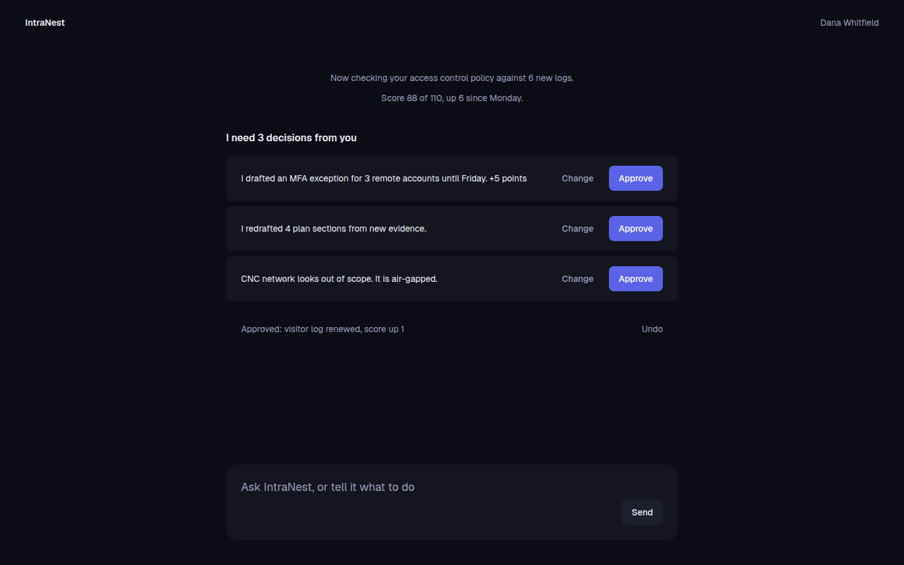
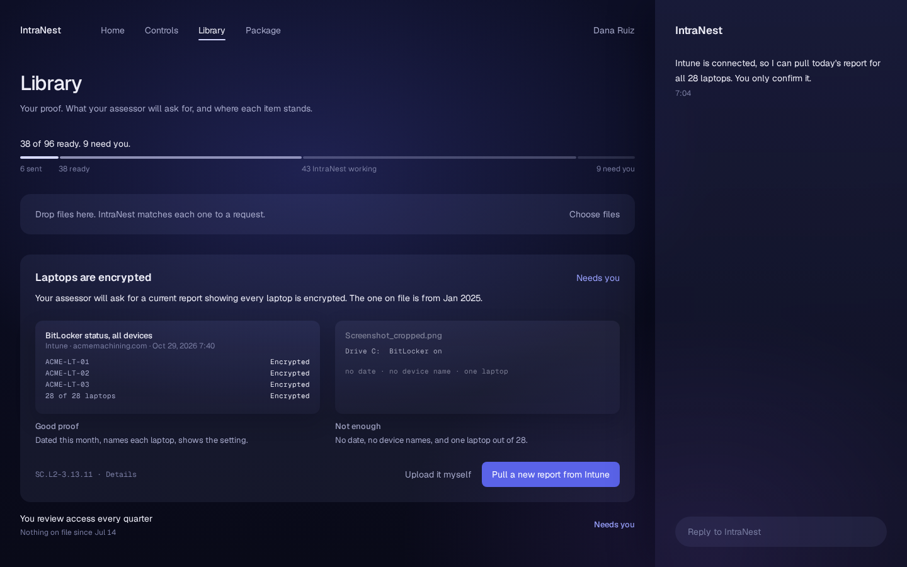
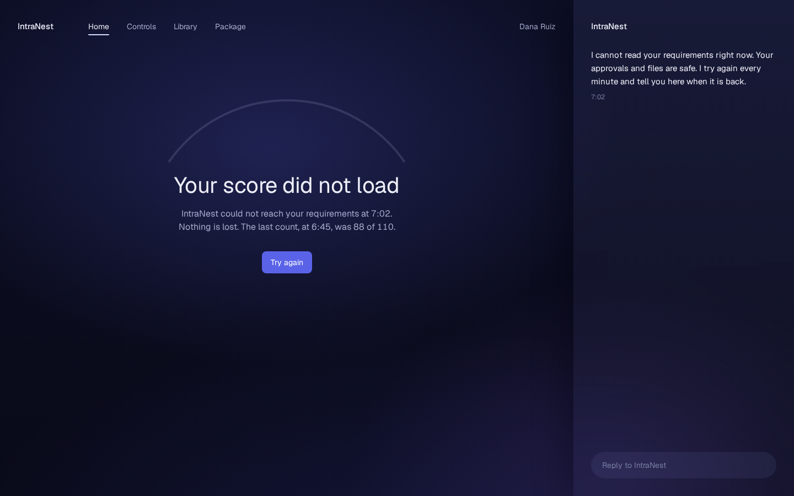

agent-first
a normal dashboard asks dana to drive: which page to open, which row matters, what to ask. a chatbot in the corner just adds one more place to get lost.
so the full agent is the mvp. it reads her documents, matches evidence to requirements and drafts. the pages become review surfaces she opens when she wants to check something herself. we built the agent loop and the approval gate before polishing a single page, because that's the version that works.


home, two earlier directions · sample data
home as a briefing.
a blank chat box asks a novice to know the question. a dashboard gives her numbers with no voice. home took six rounds to find the middle: the agent sends the first message. what it did overnight, what's waiting, where to start.

home at rest · in the product, sample data
88 + 19 + 3 = 110.
one big number on a soft arc: 88 of 110 met, "almost there." one sentence: intranest is on 19 of the 22 left, and 3 need you. the arc is drawn at the true ratio, so approving 3 moves it a small step. dana is about to sit across from an assessor who will count, so the chart counts the same way.
every number in the product works this way. a connector that found nothing says so. an empty result is a finding, not a pass.

review all · in the product, sample data
one filled button for yes.
every surface uses the same grammar. the agent has done the work, one filled button is the human's yes, and the manual path is a quiet text button, "do it myself." needs-you items fold into one stack and approve together. the agent proposes, the proposal is single-use and expires, and she confirms. that gate lives in the tool registry, not in a prompt.
the manual path stays visible and quiet. taking over is always possible and never the default, so she isn't choosing every time, and she always has a way in.

library, a needs-you row open · in the product, sample data
a checklist, not a file browser.
the library is the list of requests in plain words. drop a file anywhere and intranest matches it to a request. a row that needs you opens with one good example beside one "not enough," and one action, usually "pull a new report."
people learn the bar faster from seeing it than from reading it. dana will never read nist 800-171. she'll look at two screenshots and know which one hers looks like.


empty and failure states · in the product, sample data
honest when there's nothing, honest when it breaks.
a new org at 0 of 110 lands on a guided first step. every failure says what's safe, the last good value and the one thing to do next. the agent follows the same rule in its own words: if a connector has never run or a count is partial, it says so in the same turn.